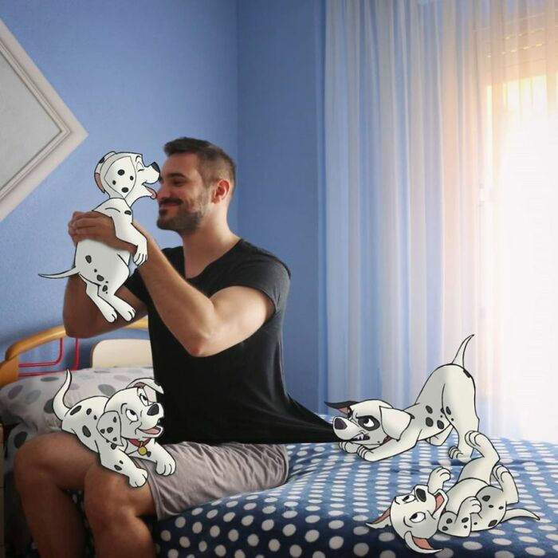

Парень настолько любит диснеевских героев, что "поселил" их у себя дома
Кто из нас в детстве, просматривая диснеевские мультфильмы, не хотел оказаться среди их популярных героев – в гуще событий! Художник Сэмюэль из Испании, похоже, не утратил этой мечты и во взрослом возрасте. И воплотил ее в жизнь. Мужчина рисует персонажей из мультфильмов Диснея, вписывая их в современные бытовые сценки. Но самое забавное то, что в эти мини-истории он включает и самого себя.
Кто из нас в детстве, просматривая диснеевские мультфильмы, не хотел оказаться среди их популярных героев – в гуще событий! Художник Сэмюэль из Испании, похоже, не утратил этой мечты и во взрослом возрасте. И воплотил ее в жизнь. Мужчина рисует персонажей из мультфильмов Диснея, вписывая их в современные бытовые сценки. Но самое забавное то, что в эти мини-истории он включает и самого себя.
Комбинированные фотографии с рисованными персонажами невероятно забавны. И автор принимает в этих фотоисториях непосредственное участие. Например, на одном снимке он помогает Алисе в Стране Чудес со школьным заданием на уроке, на другом – летает вместе с феей Динь-Динь, которая игриво осыпает его голову своей волшебной пыльцой. На третьей – лежит на диване в обнимку со львом Симбой. А еще он с удовольствием играет в своей комнате со знаменитыми щенками-далматинцами.Комбинированные фотографии с рисованными персонажами невероятно забавны. И автор принимает в этих фотоисториях непосредственное участие. Например, на одном снимке он помогает Алисе в Стране Чудес со школьным заданием на уроке, на другом – летает вместе с феей Динь-Динь, которая игриво осыпает его голову своей волшебной пыльцой. На третьей – лежит на диване в обнимку со львом Симбой. А еще он с удовольствием играет в своей комнате со знаменитыми щенками-далматинцами.Комбинированные фотографии с рисованными персонажами невероятно забавны. И автор принимает в этих фотоисториях непосредственное участие. Например, на одном снимке он помогает Алисе в Стране Чудес со школьным заданием на уроке, на другом – летает вместе с феей Динь-Динь, которая игриво осыпает его голову своей волшебной пыльцой. На третьей – лежит на диване в обнимку со львом Симбой. А еще он с удовольствием играет в своей комнате со знаменитыми щенками-далматинцами.

Художник рассказывает, что вдохновение для создания комбинированных фотографий пришло к нему еще в детстве – когда он посмотрел фильмы Диснея. И сейчас, будучи взрослым, он тоже черпает идеи, просматривая мультики со старыми добрыми персонажами. – Я люблю «Дисней» с самых ранних лет – их истории, их персонажи, их песни. Эти фильмы были частью моего детства, – говорит Сэмюэль, – Именно поэтому мне так нравится создавать эти работы.
Художник рассказывает, что вдохновение для создания комбинированных фотографий пришло к нему еще в детстве – когда он посмотрел фильмы Диснея. И сейчас, будучи взрослым, он тоже черпает идеи, просматривая мультики со старыми добрыми персонажами. – Я люблю «Дисней» с самых ранних лет – их истории, их персонажи, их песни. Эти фильмы были частью моего детства, – говорит Сэмюэль, – Именно поэтому мне так нравится создавать эти работы.
– Мой отец поставил Photoshop на компьютер, когда я был еще подростком. Он всегда редактировал фотографии, и мне нравилось то, что он делал. Поэтому однажды я решил сделать то же самое, – рассказывает художник. – Мой отец поставил Photoshop на компьютер, когда я был еще подростком. Он всегда редактировал фотографии, и мне нравилось то, что он делал. Поэтому однажды я решил сделать то же самое, – рассказывает художник. – Мой отец поставил Photoshop на компьютер, когда я был еще подростком. Он всегда редактировал фотографии, и мне нравилось то, что он делал. Поэтому однажды я решил сделать то же самое, – рассказывает художник. – Мой отец поставил Photoshop на компьютер, когда я был еще подростком. Он всегда редактировал фотографии, и мне нравилось то, что он делал. Поэтому однажды я решил сделать то же самое, – рассказывает художник. – Мой отец поставил Photoshop на компьютер, когда я был еще подростком. Он всегда редактировал фотографии, и мне нравилось то, что он делал. Поэтому однажды я решил сделать то же самое, – рассказывает художник. – Мой отец поставил Photoshop на компьютер, когда я был еще подростком. Он всегда редактировал фотографии, и мне нравилось то, что он делал. Поэтому однажды я решил сделать то же самое, – рассказывает художник. – Мой отец поставил Photoshop на компьютер, когда я был еще подростком. Он всегда редактировал фотографии, и мне нравилось то, что он делал. Поэтому однажды я решил сделать то же самое, – рассказывает художник. – Мой отец поставил Photoshop на компьютер, когда я был еще подростком. Он всегда редактировал фотографии, и мне нравилось то, что он делал. Поэтому однажды я решил сделать то же самое, – рассказывает художник. – Мой отец поставил Photoshop на компьютер, когда я был еще подростком. Он всегда редактировал фотографии, и мне нравилось то, что он делал. Поэтому однажды я решил сделать то же самое, – рассказывает художник. – Мой отец поставил Photoshop на компьютер, когда я был еще подростком. Он всегда редактировал фотографии, и мне нравилось то, что он делал. Поэтому однажды я решил сделать то же самое, – рассказывает художник. – Мой отец поставил Photoshop на компьютер, когда я был еще подростком. Он всегда редактировал фотографии, и мне нравилось то, что он делал. Поэтому однажды я решил сделать то же самое, – рассказывает художник.
Хотя Сэмюэль включает себя в самые разные истории и на снимках его можно увидеть чуть ли не со всеми героями, самые любимые его диснеевские персонажи – это Русалочка и Ариэль. С ними ему особенно приятно находиться в одной компании на фотографиях. Хотя Сэмюэль включает себя в самые разные истории и на снимках его можно увидеть чуть ли не со всеми героями, самые любимые его диснеевские персонажи – это Русалочка и Ариэль. С ними ему особенно приятно находиться в одной компании на фотографиях. Хотя Сэмюэль включает себя в самые разные истории и на снимках его можно увидеть чуть ли не со всеми героями, самые любимые его диснеевские персонажи – это Русалочка и Ариэль. С ними ему особенно приятно находиться в одной компании на фотографиях. Хотя Сэмюэль включает себя в самые разные истории и на снимках его можно увидеть чуть ли не со всеми героями, самые любимые его диснеевские персонажи – это Русалочка и Ариэль. С ними ему особенно приятно находиться в одной компании на фотографиях. Хотя Сэмюэль включает себя в самые разные истории и на снимках его можно увидеть чуть ли не со всеми героями, самые любимые его диснеевские персонажи – это Русалочка и Ариэль. С ними ему особенно приятно находиться в одной компании на фотографиях. Хотя Сэмюэль включает себя в самые разные истории и на снимках его можно увидеть чуть ли не со всеми героями, самые любимые его диснеевские персонажи – это Русалочка и Ариэль. С ними ему особенно приятно находиться в одной компании на фотографиях.